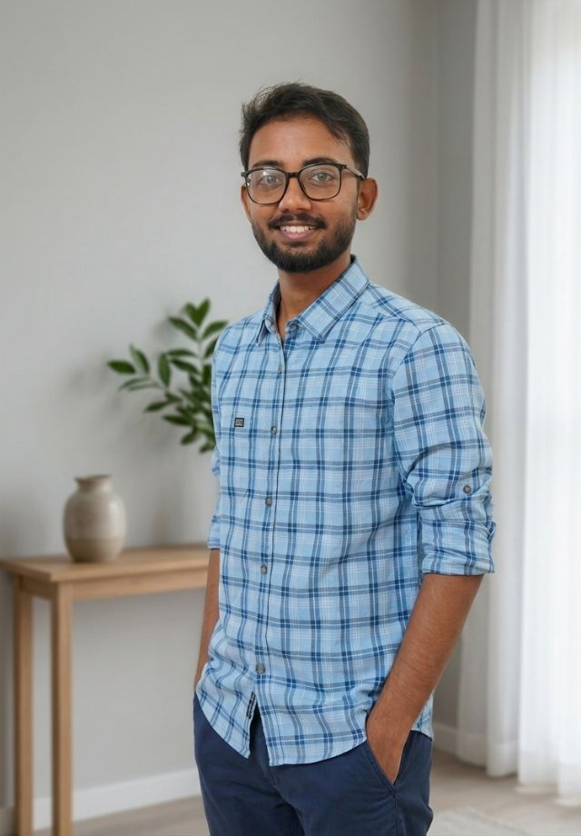

I am an SEO professional with 2 years of experience turning stagnant digital footprints into high-traffic, lead-generating assets. Specialising in B2B, B2C, and E-commerce brands, I combine technical SEO with AI-powered workflows to deliver measurable results from local search dominance and qualified lead generation to increased online sales, improved brand visibility, and sustainable long-term business growth for every client.
Worked with a Marketing Agency, implementing strategic keyword targeting, technical SEO, and content optimisation to improve search rankings and website authority. Focused on attracting high-intent business audiences, driving consistent organic traffic growth and establishing a strong digital presence in competitive markets.
Worked with Education and Healthcare clients, executing Local SEO and Google My Business (GMB) optimisation strategies to dominate local search results. Helped convert passive viewers into qualified leads by targeting high-intent audiences, improving map visibility, and driving consistent enquiries from the right local customers.
Worked with FMCG brands to drive online sales through focused website SEO strategies. Optimised product pages, category structures, and search visibility to attract high-intent buyers — generating consistent revenue growth and stronger click-through rates. Additionally expanded brand reach by listing and optimising products on Amazon and Blinkit.
Comprehensive site audits, architecture planning, and cleaning up WordPress CMS. Identifying every crawl error, speed bottleneck, and structural gap that holds back rankings.
Advanced prompt engineering to scale deep keyword research and uncover competitor gaps efficiently. Leveraging AI to surface opportunities hidden from traditional research methods.
Aligning high-value keywords to structural page copy blueprints that satisfy search queries. Every keyword mapped to a specific user intent and conversion goal.
Tweaking Core Web Vitals and implementing Schema markup for search engine clarity. Every meta tag, heading structure, and internal link refined for maximum search signal strength.
Managing off-page signals, local citations, and strategic link-building to establish domain trust. Building the external authority that tells search engines your site deserves top placement.